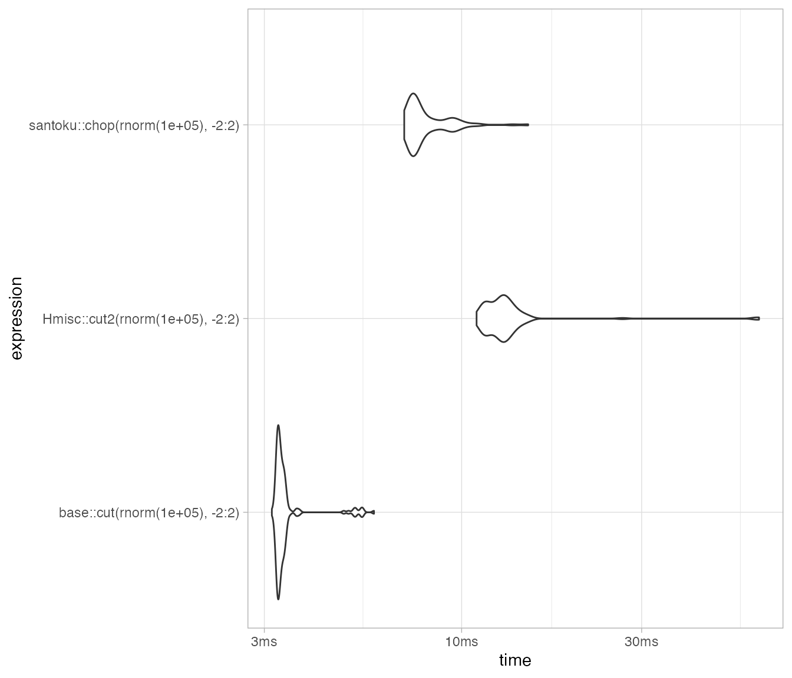
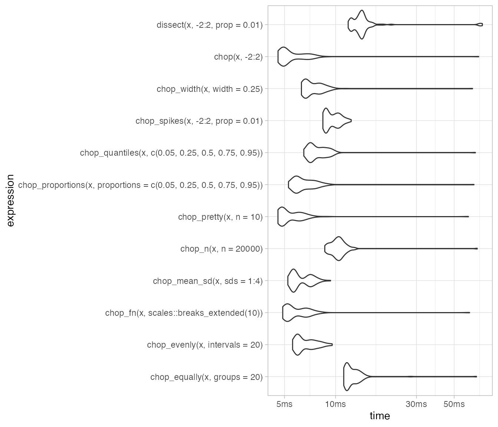
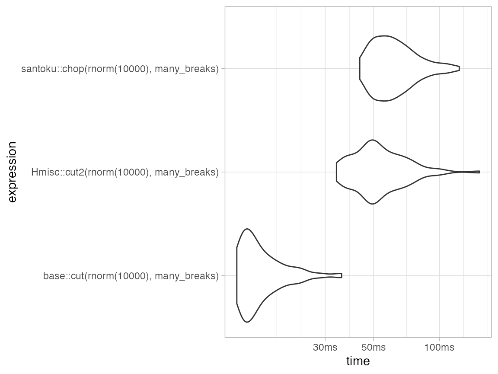

Performance
David Hugh-Jones
2022-03-06
Source:vignettes/website-articles/performance.Rmd
performance.RmdSpeed
The core of santoku is written in C++. It is reasonably fast:
packageVersion("santoku")
#> [1] '0.6.0.9000'
set.seed(27101975)
mb <- bench::mark(
santoku::chop(rnorm(1e5), -2:2),
base::cut(rnorm(1e5), -2:2),
Hmisc::cut2(rnorm(1e5), -2:2),
min_iterations = 100,
check = FALSE
)
mb
#> # A tibble: 3 × 6
#> expression min median `itr/sec` mem_alloc `gc/sec`
#> <bch:expr> <bch:tm> <bch:> <dbl> <bch:byt> <dbl>
#> 1 santoku::chop(rnorm(1e+05), -2:2) 27.4ms 31ms 31.3 14.66MB 20.0
#> 2 base::cut(rnorm(1e+05), -2:2) 16.8ms 18.8ms 51.8 3.49MB 6.41
#> 3 Hmisc::cut2(rnorm(1e+05), -2:2) 47.3ms 53.6ms 18.7 87.45MB 51.2
autoplot(mb, type = "violin")
#> Loading required namespace: tidyr
Dates
dates <- sample(as.Date("2000-01-01") + 0:364, 1e5, replace = TRUE)
break_dates <- as.Date("2000-01-01") + c(60, 120, 180)
mb_dates <- bench::mark(
santoku::chop(dates, break_dates),
base::cut(dates, break_dates),
Hmisc::cut2(dates, break_dates),
min_iterations = 100,
check = FALSE
)
mb_dates
#> # A tibble: 3 × 6
#> expression min median `itr/sec` mem_alloc `gc/sec`
#> <bch:expr> <bch:tm> <bch:> <dbl> <bch:byt> <dbl>
#> 1 santoku::chop(dates, break_dates) 19.22ms 22.9ms 41.8 10.6MB 22.5
#> 2 base::cut(dates, break_dates) 8.79ms 10.8ms 89.7 3.9MB 11.1
#> 3 Hmisc::cut2(dates, break_dates) 22.41ms 28.3ms 34.1 15.3MB 22.7
autoplot(mb_dates, type = "violin")
Cutting characters (pure R implementation)
oo <- options(santoku.warn_character = FALSE)
lipsum <- stringi::stri_rand_lipsum(100)
mb_pure_r <- bench::mark(
santoku::chop(lipsum, letters),
santoku::chop(seq(1, 26, length = 100), 1:26),
min_iterations = 100,
check = FALSE
)
mb_pure_r
#> # A tibble: 2 × 6
#> expression min median `itr/sec`
#> <bch:expr> <bch:tm> <bch:tm> <dbl>
#> 1 santoku::chop(lipsum, letters) 2.99ms 3.94ms 216.
#> 2 santoku::chop(seq(1, 26, length = 100), 1:26) 1.98ms 3.82ms 229.
#> # … with 2 more variables: mem_alloc <bch:byt>, `gc/sec` <dbl>
options(oo)
autoplot(mb_pure_r, type = "violin")
Many breaks
many_breaks <- seq(-2, 2, 0.001)
mb_breaks <- bench::mark(
santoku::chop(rnorm(1e4), many_breaks),
base::cut(rnorm(1e4), many_breaks),
Hmisc::cut2(rnorm(1e4), many_breaks),
min_iterations = 100,
check = FALSE
)
mb_breaks
#> # A tibble: 3 × 6
#> expression min median `itr/sec` mem_alloc
#> <bch:expr> <bch:tm> <bch:tm> <dbl> <bch:byt>
#> 1 santoku::chop(rnorm(10000), many_breaks) 43.2ms 57.3ms 16.4 5.08MB
#> 2 base::cut(rnorm(10000), many_breaks) 11.8ms 14ms 65.2 1.54MB
#> 3 Hmisc::cut2(rnorm(10000), many_breaks) 33.8ms 49.3ms 19.0 6.2MB
#> # … with 1 more variable: `gc/sec` <dbl>
autoplot(mb_breaks, type = "violin")